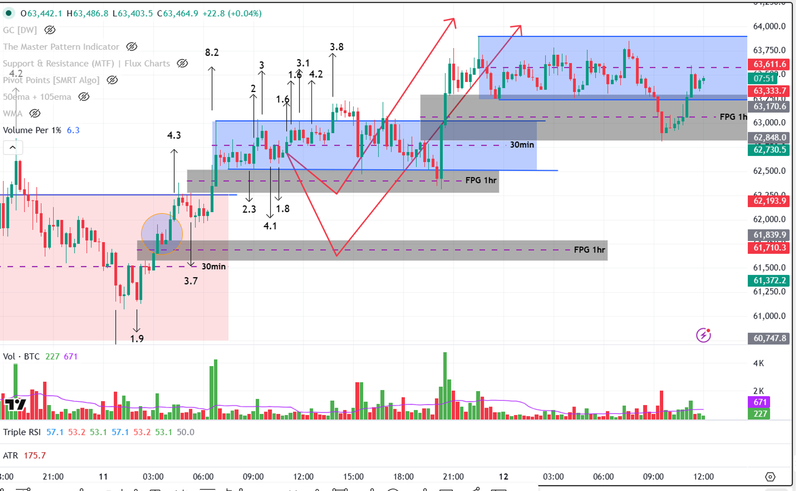

השוק נמצא כרגע במצב של אי-ודאות בטווח הקצר, עם סימנים מעורבים בין טווחי הזמן הגבוהים לנמוכים. ה-Daily מצביע על פוטנציאל להמשך ירידות לאחר כישלון ה-Spring, בעוד ה-4H מראה תנודתיות בתוך טווח. ה-1H וה-15m מראים ניסיון התאוששות קצר, אך ללא אישור מה-HTF.
כסף חכם: מוכרים שולטים — המוכרים ממשיכים להפגין נוכחות בגגות הטווחים, וכישלון ה-Spring ב-Daily מחליש את תזת הקונים.
פעולה מומלצת: לחכות לאישור — יש צורך באישור נוסף מה-HTF לפני כניסה לפוזיציה.
בעוד ה-Daily מצביע על חולשה לאחר כישלון ה-Spring, ה-1H וה-15m מראים ניסיון התאוששות קצר שעלול להצביע על תמיכה זמנית. אין קונצנזוס ברור בין טווחי הזמן.
החלטה: יש להמתין לאישור נוסף מה-HTF (Daily/4H) לפני כניסה לפוזיציה. יש לשים לב לתגובת המחיר באזור ה-FVG ב-1H.

TR מזוהה: 60705 (SC) → 64220.9 (TR.">AR)
מבנה: Accumulation — נראה שהשוק נמצא בשלב של צבירה או ניסיון צבירה לאחר ירידה.
פאזה כללית: C (הסבר טקסטואלי בלבד — לא מסומן על הגרף)
קריאה: Bearish × בינוני
V/1% baseline: 47727.6
| תאריך | סוג נר | V/1% | יחס ל-baseline | משמעות |
|---|---|---|---|---|
| 2026-06-08 | SC | 213289.4 | 4.47x | Climactic Volume |
| 2026-06-10 | נר ירידה | 250985.4 | 5.26x | Climactic Volume |
| 2026-06-12 | נר נוכחי | 139586.1 | 2.92x | High Volume |
| 2026-06-09 | נר ירידה | 47727.6 | 1.00x | Baseline |
| 2026-06-11 | נר עליה | 23338.3 | 0.49x | Low Volume |
📌 baseline = V/1% של ה-BC daily. נרות > פי 2 מ-baseline = climactic.
הגל האחרון של הירידה (מ-63900 ל-62810 ב-11.6) הראה ווליום יורד (V/1% של 23338.3), מה שמעיד על מאמץ נמוך לתוצאה משמעותית. הנר הנוכחי (12.6) מראה ווליום גבוה יותר אך טווח צר.
אבחנה: Anomaly
📝 מסקנה יומי: למרות שה-SC היה חזק, ה-AR והתנועה שלאחריו לא הראו המשכיות חזקה. כישלון ה-Spring (או ניסיון Spring שלא הצליח) בטווח ה-Daily מצביע על חולשה פוטנציאלית.

TR (אם שונה מ-יומי): 59000 → 64500
תאימות ל-יומי: דומה, השוק נע בטווח רחב.
קריאה: Neutral × בינוני
גל עליה אחרון vs גל ירידה אחרון: גלי העליה והירידה האחרונים ב-4H נראים דומים מבחינת ווליום וטווח, ללא יתרון ברור לאף צד.
| תאריך/שעה | סוג נר | V/1% | יחס ל-baseline | משמעות |
|---|---|---|---|---|
| 2026-06-11T20:00 | נר עליה | 193232.6 | 4.05x | High Volume |
| 2026-06-12T00:00 | נר עליה | 36440.1 | 0.76x | Normal Volume |
| 2026-06-11T16:00 | נר עליה | 17570.3 | 0.37x | Low Volume |
| 2026-06-12T08:00 | נר עליה | 15532.5 | 0.32x | Low Volume |
| 2026-06-12T04:00 | נר עליה | 15532.5 | 0.32x | Low Volume |
הנרות האחרונים ב-4H הראו ווליום גבוה יחסית אך טווחים צרים, מה שמעיד על חוסר החלטיות או ספיגה. אין מאמץ ברור שמוביל לתוצאה משמעותית.
אבחנה: Anomaly
📝 מסקנה 4H: ה-4H מראה תנודתיות בתוך טווח, ללא סימן ברור לכיוון. חוסר ההחלטיות בולט בווליום הגבוה ללא טווחים רחבים.

אירוע נוכחי: Accumulation / ניסיון TR + חזרה. סחיפת stops של longs. סיגנל לעלייה. דרגות: #1 (Terminal — חזק), #2 (Ordinary), #3 (Minor — שווה כניסה ישירה).">Spring מתחת לאזור ה-FVG של ה-4H (אזור 61600-62000).
Significant Bar אחרון: הנר של ה-12.6 בשעה 08:00 (סגירה 63442.1) הראה ווליום גבוה יחסית (V/1% של 4747.2) וטווח בינוני, עם סגירה גבוהה.
SMC structure: CHOCH אחרון — שבירת ה-LH ב-62800.
קריאה: Bullish × נמוך
| תאריך/שעה | סוג נר | V/1% | יחס ל-baseline | משמעות |
|---|---|---|---|---|
| 2026-06-12T08:00 | נר עליה | 4747.2 | 1.52x | High Volume |
| 2026-06-12T07:00 | נר עליה | 12476.4 | 4.00x | High Volume |
| 2026-06-12T06:00 | נר ירידה | 6712 | 2.15x | High Volume |
| 2026-06-12T09:00 | נר עליה | 3121.8 | 1.00x | Baseline |
| 2026-06-12T05:00 | נר ירידה | 4620.8 | 1.48x | High Volume |
הגל האחרון של ה-1H (מ-63061 ל-63509.9) הראה ווליום הולך ופוחת, עם טווחים צרים, מה שמצביע על מאמץ נמוך לתוצאה משמעותית.
אבחנה: Validation
📝 מסקנה 1H: ה-1H מראה סימנים של ניסיון התאוששות לאחר שבירת ה-LH, עם ווליום נמוך על התיקונים, מה שיכול להצביע על חוסר היצע.

סטאפ type: Primary
QM Pattern: לא נצפה QM ברור ב-15m.
QML.">MPL level: 63170
סה"כ: 1/8 → Missing
טריגר: לא מתקיים.
Entry: לא מומלץ.
SL: לא רלוונטי.
TP1: לא רלוונטי.
TP2: לא רלוונטי.
תנאי הפעלה: אם המחיר יחזור לאזור ה-OB ב-63170-63300 ויראה דחייה עם ווליום נמוך.
Entry / SL / TP: כניסה קצרה באזור ה-OB, SL מעל ה-OB, TP ראשון ב-62800.
הניתוח מבוטל אם:
מה ה-הכסף החכם עושה כרגע: מוכרים שולטים
ראיות:
מה ה-הכסף החכם ינסה לעשות הלאה: ינסה כנראה לדחוף את המחיר מטה אם יראה חולשה נוספת, או ימשיך לדשדש תוך חיפוש הזדמנות.